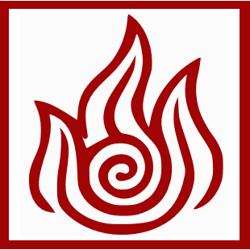

DOBRA DE AR
"Ar é o elemento da liberdade"

A Dobra de Ar é uma das quatro Artes de Dobra, ela consiste na capacidade para controlar e manipular as correntes de ar. Os Nômades do Ar utilizam este tipo de dobra no seu dia-dia.
Ar é o elemento da liberdade. Dobradores o procuram continuamente para a iluminação espiritual, e o resultado é que todos os Nômades do Ar são dobradores. Os primeiros dobradores aprenderam com os bisões voadores.
A chave para a dobra de ar é a flexibilidade, encontrar e seguir o caminho de menor resistência. Ela consiste em deixar o adversário atacar primeiro, esquivar-se e, quando o adversário estiver de costas para você, atacá-lo sem erros ou riscos. Dobra de Ar é notável por ser quase totalmente defensiva; no entanto, tem reputação de ser a mais dinâmica das quatro artes de dobra. Dobradores de Ar podem lidar com muitos oponentes de uma vez com grandes e poderosos ataques que poderiam ser fatais, entretanto, devido à natureza pacifista dos Nômades do Ar, tais ataques são usados raramente. Devido à sua espiritualidade, muitas vezes se adaptam à situação que os rodeia e empregam jing negativo, preferindo manobras evasivas em oposição ao confronto direto.
DOBRA DE ÁGUA
"A água é o elemento da mudança"
Dobra de Água é uma das quatro artes de Dobra elementais, a capacidade de manipular água. O povo das Tribos da Água utilizam este tipo de dobra. Por sua vez, as tribos da água são divididas entre a Tribo da Água do Sul, a Tribo da Água do Norte, e a menos conhecida Tribo da Água do Pântano, situada no Reino da Terra. A água é o elemento da mudança; a lua é a fonte de poder da dobra de água, e os primeiros dobradores de água aprenderam a técnica observando como ela empurra e puxa as marés.
As Tribos da Água são os únicos povos que não aprenderam a dobrar a partir de um animal, embora Tui e La tomassem a forma de peixes koi no Mundo Mortal. O estilo de luta de dobra de água é mais fluido e gracioso, atuando em harmonia com o seu ambiente. No entanto, o estilo de dobra do Pântano Nebuloso é mais rígido e reto, porém, eles também utilizam bastante da natureza à sua volta.
Dobradores de água lidam com o fluxo de energia, permitindo que sua defesa se torne o próprio ataque e redirecionando a força do oponente contra ele.
DOBRA DE TERRA
"A terra é o elemento da substância."


Dobra de terra, uma das quatro Artes de Dobra, é a habilidade geocinética para manipular a terra e a rocha em todas as suas formas, prevalece no Reino da Terra e na República Unida.
A terra é o elemento da substância, por isso as pessoas do Reino da Terra são diversas, fortes e duradouras. Depois da decisão das tartarugas leões de renunciarem ao seu papel como protetoras da humanidade, Oma e Shu foram os primeiros a aprenderem a arte da dobra de terra com as Toupeiras-Texugo.
A chave para a dobra de Terra é a utilização do jing neutro, que envolve esperar e ouvir o momento certo para atacar e, quando esse momento chegar, agir decisivamente. Em outras palavras, os dobradores de terra geralmente sofrem os ataques de seus inimigos até que a oportunidade certa de contra-atacar se revele.
DOBRA DE FOGO
"Fogo é o elemento de poder"


A Dobra de Fogo, uma das quatro artes de dobra elementares é a habilidade pirocinética de controlar o fogo. É única entre as artes de dobra, pois é a única em que o executor pode gerar o elemento. Os primeiros dobradores de fogo humanos viveram em uma cidade em cima de uma tartaruga leão durante a era de Raava e a arte mais tarde se espalhou para os Guerreiros do Sol, a Nação do Fogo e a República Unida das Nações. O Reino da Terra também tem uma pequena minoria dobradora de fogo.
Conforme descrito por Iroh, o fogo é o elemento do poder, consistindo na força avassaladora temperada pela vontade inabalável de realizar tarefas e desejos. No entanto, durante a Guerra dos Cem Anos, uma Nação do Fogo militarista transformou isso em dobra de fogo sendo alimentado pela raiva, ódio e ira. Os dobradores de fogo extraem seu poder do sol, e os primeiros dobradores de fogo humanos derivaram suas técnicas de dobra de fogo dos dragões.
A dobra de fogo é conhecida por seu estilo de ataque intenso e agressivo e falta geral de movimentos defensivos adequados, embora os dobradores de fogo possam modificar as manobras ofensivas para funcionar como defesa, como criar grandes paredes de fogo ou derrubar ataques com socos de fogo.